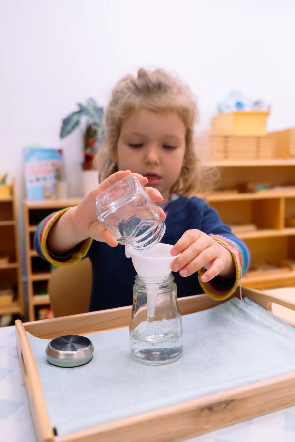
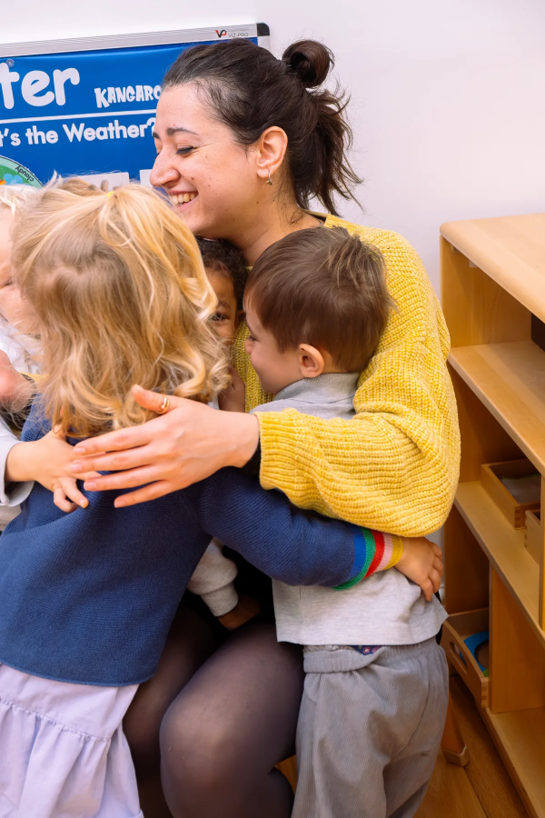
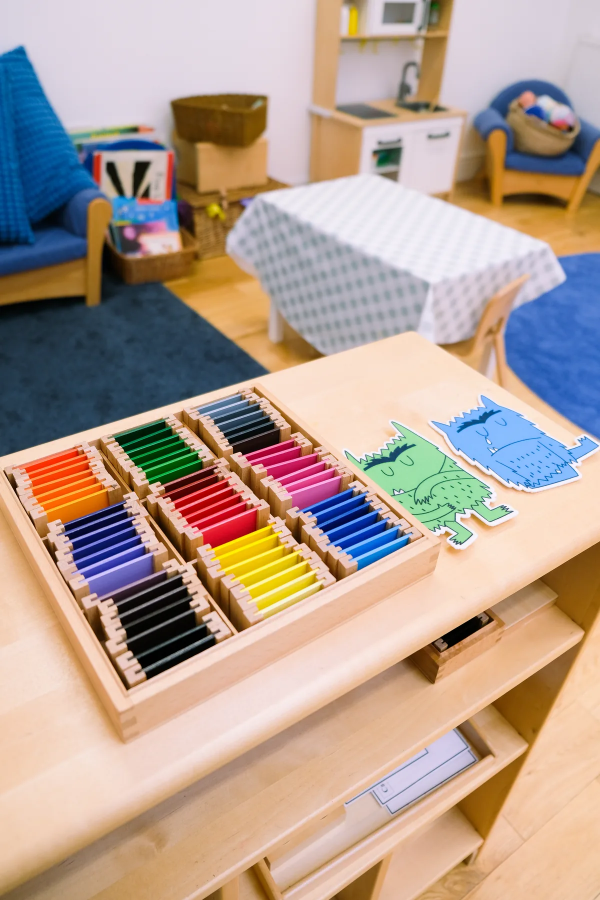

Both the Montessori philosophy and the Early Years Foundation Stage place the unique child at the centre, building positive relationships within an enabling environment. We bring the two together to support confidence, independence and readiness for school.



The Early Years Foundation Stage (EYFS) is the UK's statutory framework for early education. It sets out seven areas of learning — three prime (Communication & Language, Personal, Social & Emotional Development, and Physical Development) and four specific (Literacy, Mathematics, Understanding the World, and Expressive Arts & Design). Our Montessori curriculum areas map onto and enrich this framework every day:
Everyday activities that build independence, focus and self-belief.
Hands-on materials that refine the senses and prepare the mind.
A rich, talk-filled environment where vocabulary and early reading grow.
Concrete materials make number and pattern tangible before they're abstract.
Geography, science and the natural world build knowledge and respect.
Music, movement and art give every child a creative outlet.
Intent, implementation, impact: a broad, balanced curriculum with clear progression from the very start, delivered through child-led work cycles and play — building confident, independent learners who are happy, healthy and school-ready.
| Time | Moment | What happens |
|---|---|---|
| 08:00 | Children arrive | A calm, settled welcome as children greet their key person and ease into the day. |
| 09:00 | Circle time | Coming together to sing, share and set the tone for the morning. |
| 09:15 | Work cycle — focused work | Uninterrupted Montessori time to choose activities and follow their curiosity. |
| 10:00 | Morning snack | A wholesome, balanced snack. |
| 11:00 | Outdoors | Fresh air, garden play and exploring the natural world. |
| 12:15 | Lunch | Nutritious, freshly prepared meals shared family-style. |
| 12:45 | Rest | Quiet time to recharge, with naps for those who need them. |
| 13:15 | Work cycle — crafts, cooking & science | Afternoon discovery through creative, hands-on activities. |
| 14:00 | Afternoon snack | A wholesome, balanced snack. |
| 15:30 | Tea | A wholesome afternoon tea together before the day winds down. |
| 16:00 | Work cycle — independent work | Gentle, independent play and learning until home time. |
| 17:00 | Early-evening snack | A final wholesome snack before collection. |
Our team is made up of dedicated Directors, Managers, Room Leaders, Nursery Practitioners and Nursery Assistants — all holding, or working towards, appropriate early-years qualifications, with many degree-holders among them.
We support genuine career growth through T-Levels, Level 2 & 3 Diplomas in Early Years, a Foundation Degree in Early Years, Early Childhood Studies degrees and teaching qualifications — alongside ongoing in-house training in paediatric first aid, safeguarding, food hygiene, fire safety, child development, curriculum practice, planning & observation, and customer care.
Eligible working parents of children from 9 months old can register to access 15 hours of government-funded childcare a week.
All three- and four-year-olds are entitled to 15 hours of free early education a week, over 38 weeks of the year.
Working parents of three- and four-year-olds may be eligible for an additional 15 hours — up to 30 hours a week.
Some two-year-olds also qualify for 15 hours a week, depending on family circumstances and eligibility.
Check eligibility with our team
Register with proof of date of birth & eligibility
Sign a short parental declaration each term
Authentic Montessori practice with a caring, family feel at the heart of Hounslow.
A warm, welcoming home for early learners, with spacious studios and a secure garden.
Just a short walk from Ravenscourt Park, offering calm, prepared Montessori environments close to nature.
Book a visit — see the nursery, meet the team, watch a Montessori morning in action.
Apply — register your child's place through our online application portal.
Download your fee sheet — available per branch at alexandramontessori.co.uk/fees.